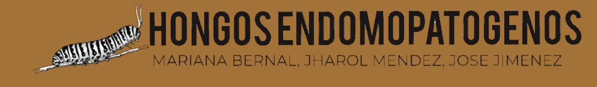

En la fase de infección, el hongo entomopatógeno entra en contacto con el insecto huésped, que suele ser una oruga. Las esporas del hongo se adhieren a la superficie externa del insecto, liberando una serie de enzimas digestivas que descomponen la cutícula del huésped. Este proceso es crucial, ya que permite que el hongo penetre y comience su colonización interna. Las esporas se activan al entrar en contacto con la humedad y las condiciones adecuadas del ambiente. A medida que el hongo penetra las capas externas del insecto, empieza a invadir sus tejidos, utilizando sus fluidos internos como fuente de nutrientes. Este es solo el comienzo de un proceso biológico complejo, donde el hongo aprovechará cada recurso del insecto hasta dominarlo completamente.
En la fase de colonización interna, el hongo entomopatógeno ya ha penetrado la cutícula del insecto y comienza a expandir sus estructuras internas llamadas hifas dentro del cuerpo del huésped. Estas hifas se ramifican rápidamente, invadiendo órganos y tejidos, y comienzan a consumir los recursos del insecto para su crecimiento y reproducción. Durante esta fase, el insecto comienza a mostrar signos evidentes de deterioro, tales como parálisis, debilidad y una disminución significativa en su actividad física. La oruga, que en su estado normal se desplazaría con agilidad, empieza a moverse lentamente o incluso detiene su actividad completamente debido a los efectos de la infección. Los tejidos del insecto se descomponen mientras el hongo crece y se multiplica, completando su proceso de alimentación y expansión en el huésped..
La fase final del ciclo de vida del hongo entomopatógeno es la fase de esporulación y muerte del huésped. Una vez que el hongo ha invadido y consumido prácticamente todos los recursos internos del insecto, llega a la etapa en la que comienza a formar nuevas esporas, a menudo sobre el cadáver del insecto infectado. La esporulación se produce cuando el hongo se reproduce sexualmente o asexualmente para generar nuevas esporas que son liberadas al entorno. Estas nuevas esporas pueden dispersarse por el viento o por el contacto con otros insectos, y son capaces de infectar a otros huéspedes susceptibles. Mientras esto ocurre, la oruga, ya completamente destruida por el hongo, muere. La muerte del insecto y la esporulación marcan el final de un ciclo biológico del hongo, permitiendo que el ciclo se repita una vez que las nuevas esporas encuentran un nuevo huésped que las pueda portar, iniciando así otro proceso de infección.